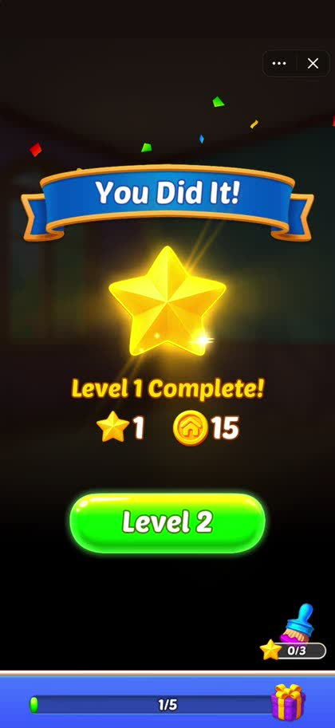
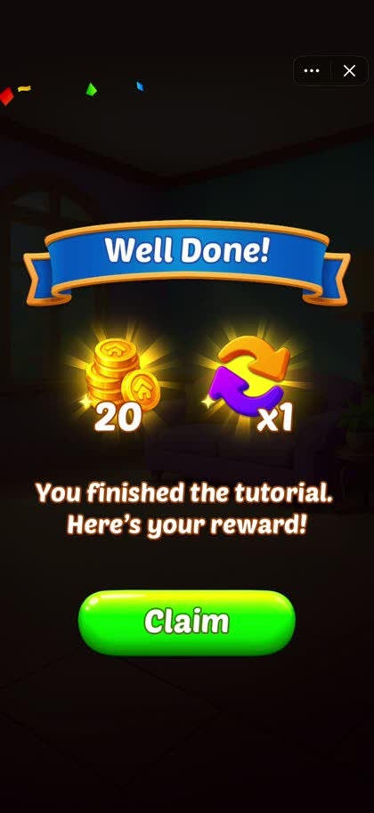
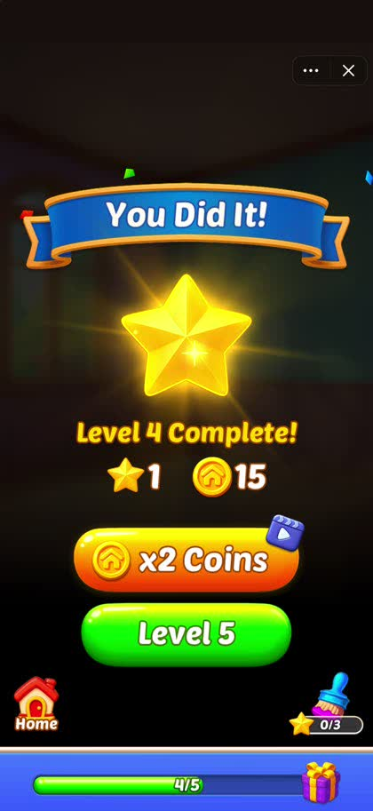
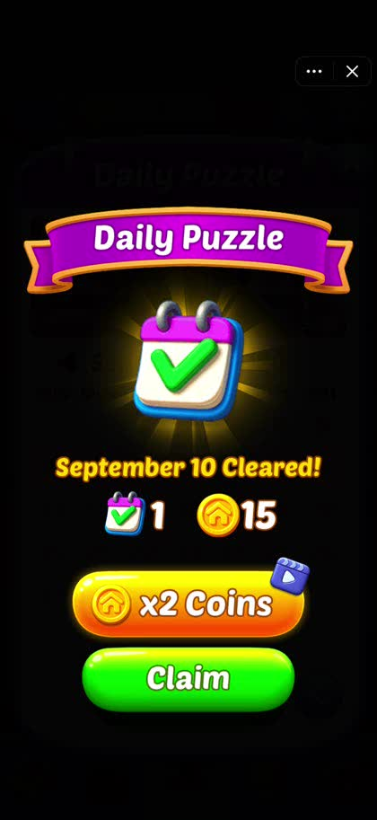
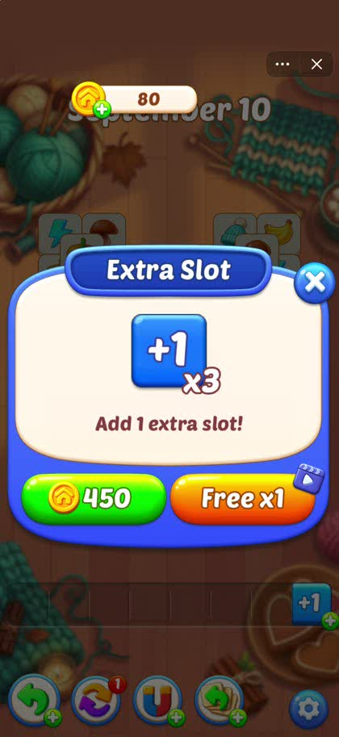
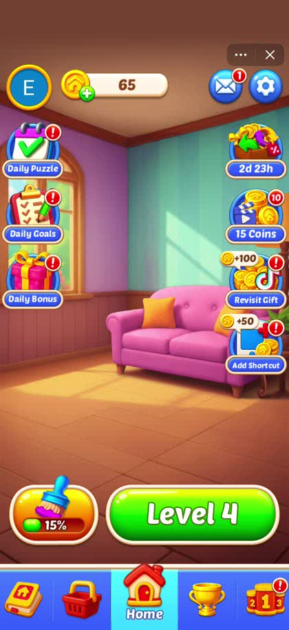
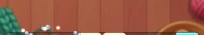
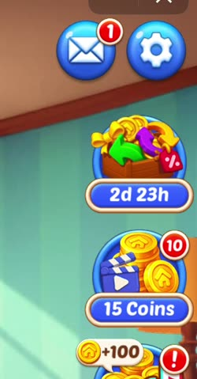
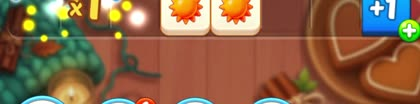
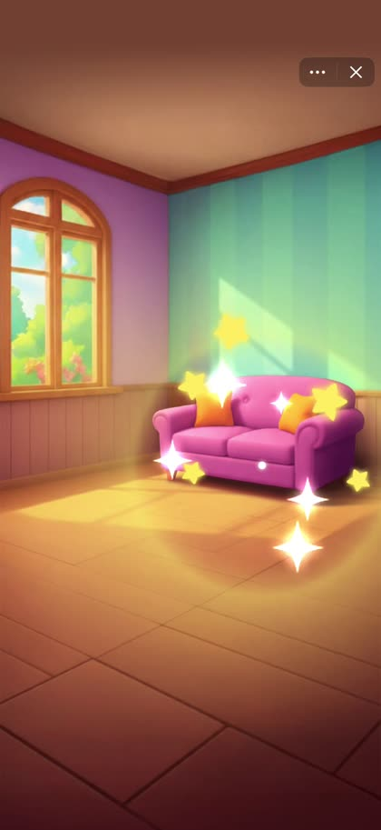

업계 표준 구좌 셋이 코지에 이미 있는데 전부 막혀 있거나 안 쓰임. 이걸 열고, 준표준에서 셋을 만듦. 전면광고와 같은 방식으로 파라미터화해서 라이브에서 조정함.
코드에 있는 보상형 구좌를 전부 꺼내 로그와 대조함. 2026-08-01~09-08 · 틱톡 · 개발계정 제외.
| 구좌 | 시도 | 비중 | 완주 | 완주율 | 상태 / 이 건에서의 처리 |
|---|---|---|---|---|---|
stage_reward_double 결과창 x2 | 791 | 42.0% | 318 | 40.2% | 주력인데 튜토 구간에 버튼이 숨겨져 있음. 이 건의 1순위 |
continue 이어하기 | 431 | 22.9% | 138 | 32.0% | 완주율 최저. 판을 이어하려고 누른 건데 셋 중 둘이 못 받음 |
rv_extra_slot 추가 슬롯 | 140 | 7.4% | 48 | 34.3% | 유지 |
free_coin_lobby_1 로비 무료코인 | 94 | 5.0% | 55 | 58.5% | 하루 10회까지 열려 있는데 안 쓰임. 동선 문제 |
item_extra_slot | 84 | 4.5% | 41 | 48.8% | 유지 |
item_magnet | 75 | 4.0% | 56 | 74.7% | 유지 — 완주율 최고 |
daily_puzzle_previous_day | 60 | 3.2% | 42 | 70.0% | 유지 |
item_lift_3 · item_undo · item_shuffle | 132 | 7.0% | 69 | 52.3% | 유지 |
daily_reward_double | 37 | 2.0% | 10 | 27.0% | 유지 |
free_coin_inbox | 32 | 1.7% | 16 | 50.0% | 유지 |
죽은 구좌 4종 — garden_finds_* · lucky_clovers_double · leaderboard_friends_invite | 7 | 0.4% | 3 | — | 럭키 클로버만 복구, 나머지는 손대지 않음 |
| 합계 | 1,883 | 100% | 776 | 41.2% |
free_coin_lobby_2~_10은 이름만 있는 라벨임. 실제로는 _1 하나로 찍히고 회차만 올라감.
ViewCozyTileResult.ts:817에서 버튼 노드를 아예 꺼 버림 — 유저는 x2가 있다는 것 자체를 모름.
isTutorialPlayer = totalClearCount < 3 || (totalClearCount == 3 && currentStarCount == 0);
if (isTutorialPlayer) {
this.adButtonNode.active = false; // 817행 — 버튼을 숨김
}
...
if (!isTutorialPlayer) {
this.adButtonLoopingAnimation.play(); // 1572행 — 강조 애니메이션도 같이 막힘
}
| 구간 | 판 종료 | 비중 | 유저 |
|---|---|---|---|
| 튜토 구간 (1~3판) — x2 안 보임 | 5,824 | 36.2% | 2,238 |
| 4판 이후 — x2 보임 | 10,273 | 63.8% | 1,341 |
코지 미국 · 8/1~9/8. 유저의 40.1%(897명)는 4판을 못 넘겨서 x2 버튼을 평생 한 번도 못 봄.
타일 매치·매치3에서 사실상 필수로 통하는 구좌 넷을 코지 상태와 맞춰 봄. 기준은 Unity(구 ironSource)가 정리한 퍼즐 게임 상위 구좌와 GameRefinery 사례집임.
| 표준 구좌 | 레퍼런스 | 코지 상태 |
|---|---|---|
| 부활 · 판 막힘 구제 (가장 보편) | Zen Match(시간 소진 시), Match Triple 3D(라이프 소진 시 · 코인 100 대안) | 있음 — 슬롯 풀 팝업. 그런데 상황의 15.8%만 광고로 감 |
| 클리어 보상 2배 | Tile Busters(현금 아이템 2배 클레임) | 있음 — 튜토 구간에 버튼이 숨겨져 있음 |
| 홈 · 상점 무료 재화 (일 상한 + 쿨다운) | Match Triple 3D(10코인 · 일 1~2회), Tile Family(코인 · 일 상한) | 있음 — 하루 10회가 열려 있는데 두 달 94건 |
| 라이프 · 하트 충전 | Zen Match, Triple Match 3D | 붙일 수 없음 — 코지에 라이프 시스템 자체가 없음 |
표준 구좌는 이미 깔려 있음. 문제는 셋 다 막혀 있거나 안 쓰인다는 것임. 그리고 장르 RV 물량의 큰 축인 라이프 충전은 코지에 아예 못 붙음(heart·life·energy 어느 것도 코드에 없음). 그래서 신규 지면을 만들기 전에 이미 있는 셋을 여는 게 우선이고, 신규는 준표준에서 고름.
2026-09-10 라이브 빌드 화면 녹화(4분 20초)를 프레임 단위로 훑음. 코드에서 읽은 것과 어긋나는 부분이 둘 있었음.

totalClearCount < 3 게이트와 일치함




튜토리얼 완료 보상 화면이 비어 있음. 8000_FINISH_REWARD_TUTO_POPUP이 1,431건 · 유저 1,430명이고 그중 98%(1,403건)가 Claim을 누름. 게임에서 이탈률이 가장 낮은 화면인데 보상형이 없음. 튜토를 끝낸 직후라 몰입도 최고 시점이고, 보상이 코인 20 + 아이템 1개로 2배로 줘도 경제에 부담이 없는 크기임.
| 화면 | 로그 | 진입 | 유저 |
|---|---|---|---|
| 튜토 완료 보상 | 8000_FINISH_REWARD_TUTO_POPUP | 1,431 | 1,430 |
| 꾸미기 진행 (결과창에서 강제 이동) | 5370_LOBBY_DECO_COMPLETE | 2,946 | 1,633 |
| 데일리 퍼즐 | 8070_DAILY_PUZZLE_POPUP | 180 | 68 |
| 일일 목표 | 8140_DAILY_GOALS_POPUP | 82 | 47 |
| 출석 보상 | 8110_DAILY_REWARD_POPUP | 74 | 67 |
| 인박스 무료코인 버튼 | 8022_BTN_INBOX_FREE_COIN | 71 | 57 |
| 바로가기 추가 · 재방문 선물 | 8280 · 5250 | 61 · 62 | 55 · 53 |
튜토 완료와 꾸미기를 빼면 메타 화면 진입이 전부 두 달에 200건 미만임. 여기에 구좌를 새로 만들어도 물량이 안 나옴 — 일일 목표 · 앨범 · 토너먼트를 이 건에서 제외하는 이유임.
꾸미기는 예외임 — 유저가 찾아가는 게 아니라 끌려감. 5370의 99.7%(2,938건)가 2401_FINISH_RESULT_PLAY_NEXT 직후 평균 2.1초 뒤에 찍힘. 결과창 버튼을 누르면 곧바로 꾸미기 연출로 넘어가는 강제 흐름임. 꾸미기 화면을 직접 여는 버튼(5600_BTN_DECORATION)이 104건뿐인 것과 별개로, 판을 끝낸 유저의 73%가 이 순간을 겪고 1인당 1.8회 반복함.
| 이어하기 상황에서의 선택 | 건수 | 비중 |
|---|---|---|
2200_GAMEPLAY_CONTINUE — 슬롯 7칸이 다 차서 판이 막힘 | 2,721 | 100% |
2213_GAMEPLAY_CONTINUE_RESTART — 재시작 선택(onClickRetry) | 1,793 | 65.9% |
RV continue 시도 — 광고 보고 lift 3 받기 | 431 | 15.8% |
코지 미국 · 8/1~9/8. 셋 다 PopupSlotFull.ts 한 팝업에서 나옴 — 슬롯이 가득 차 더 못 두는 순간에 onClickShowFreeLift3ADs(광고)와 onClickRetry(재시작)를 나란히 주는 화면임. 판을 계속할 의사가 있는 상황 2,721건에서 3분의 2가 광고를 안 보고 판을 버림. 표준 구좌 중 가장 보편적인 자리인데 진입률이 이 정도면 팝업에서 광고가 기본 선택지로 안 보인다는 뜻임.
결과창의 "Continue" 버튼과 혼동하지 말 것. 결과창 하단에도 continueBtnNode가 있는데 그건 꾸미기로 넘어가는 진행 버튼이고(ViewCozyTileResult.onClickContinue, 주석에 여기서 deco 나오기) 광고와 무관함. 이름만 같고 다른 것임.
| 에러 | 메시지 | 건수 | 비중 |
|---|---|---|---|
USER_INPUT | ad closed early | 598 | 76.1% |
SHOW_FAILED | [object Object] — 직렬화 안 됨 | 106 | 13.5% |
TIMEOUT | ad close timed out (60s) | 56 | 7.1% |
SHOW_FAILED 기타 | show failed · 서드파티 재고 | 26 | 3.3% |
2421 282 / 2420 739)로 RV 완주율 40.2%와 거의 같음 — 끝까지 본 유저는 대부분 보상을 받음. 병목은 지급이 아니라 시청임SHOW_FAILED의 error_message가 [object Object]로 올라와 실패 사유를 못 가름. 전면광고 4020과 같은 결함임틱톡이 권하는 수익 축은 보상형인데, 코지는 주력 구좌를 신규 유저 구간에서 통째로 가려 두고 있음. 게다가 어렵게 누른 유저의 59%가 끝까지 못 봄. 새 자리를 만들기 전에 이미 있는 자리부터 여는 게 순서임.
이미 있는 표준 구좌 셋을 열고, 준표준에서 넷을 만들고, 계측 둘을 고침. 초록 표시는 늘어나는 시도가 큰 순서로 셋임.
| 구분 | 화면 | 구좌 | 현재 | 예상 | 레퍼런스 · 근거 |
|---|---|---|---|---|---|
| 연다 |  | 슬롯 풀 — Free lift 3를 재시작보다 앞·강조로 | 431 | 820 | 표준 1위 구좌. 재시작 선택 65.9%를 진입률 30%로 흡수 |
| 연다 | 결과창 x2 — 튜토 개방 | 791 | 1,240 | 표준 2위. 튜토 판 종료 5,824건 × 현행 시도율 7.7% | |
| 연다 |  | 로비 무료코인 — 레드닷 · 배치 | 94 | 200 | 표준 3위. 상한 10회는 이미 열려 있음 |
| 만든다 |  | 판 시작 전 부스터 1개 무료 | 0 | 180 | Unity가 메타 매치3 권장 구좌로 명시(Property Brothers · Two Dots). 판 시작 17,991건 × 1% |
| 만든다 | 해당 화면 FTUE 영상 범위 밖 | 럭키 클로버 골드타일 x2 | 0 | 400 | Tile Busters의 2배 클레임과 같은 계열. 팝업 6,663건 × 6% · 주석 코드 복구 |
| 만든다 | 튜토리얼 완료 보상 x2 | 0 | 215 | 1,431건 × 15% — 이탈률 최저 화면, Claim 98% | |
| 만든다 |  | 꾸미기 진행 스텝 1회 추가 | 0 | 235 | 2,938건 × 8% — June's Journey 등대 리노베이션과 같은 형태 |
| 고친다 | 데일리 퍼즐 x2 — 로그 라벨 분리 | — | — | 구좌는 이미 있음. stage_reward_double과 섞여 찍힘 | |
| 고친다 | 해당 화면 FTUE 영상 범위 밖 | 4220 실패 사유 직렬화 | — | — | 완주율 개선의 선결 조건 |
| 합계 | 1,883 | 3,550 | 시도 1.9배 |
꾸미기는 "완료 보상 2배"가 아니라 "진행 스텝 1회 추가"로 붙임. 타일매치·매치3·머지 어디에서도 데코 완료 보상을 2배로 주는 사례가 확인되지 않음. 업계 관행은 꾸미기 결과물을 2배로 주는 게 아니라, 꾸미기로 가는 재화와 진행 스텝을 광고로 파는 것임 — 메타 재화를 홈에서 지급(Property Brothers 10젬)하거나, 진행 스텝을 하루 1회 광고로 추가(June's Journey 등대 리노베이션, 20시간 쿨다운)하는 형태임.
코지는 앞의 형태를 로비 무료코인으로 이미 갖고 있으므로 뒤의 형태를 씀 — 꾸미기 연출이 끝난 자리에 "광고 보고 한 칸 더"를 붙임. 별을 추가로 주지 않고 메타 진도만 앞당기는 형태라 보상 경제를 건드리지 않음. 하루 상한을 둠.
클릭률은 전부 보수적으로 잡음. 신규 구좌를 결과창 x2의 현행 시도율(7.7%)보다 낮거나 비슷하게 뒀음 — 럭키 클로버 6%, 판 시작 1%. 판 시작 부스터는 잠식 경고가 붙는 구좌라(ironSource: IAP로 파는 것보다 적게 줄 것) 지급량을 아이템 1개로 제한하고 하루 상한을 둠.
| 상황 | As-Is | To-Be |
|---|---|---|
| 1~3판 결과창 | x2 버튼 숨김 (강조 애니메이션도 없음) | 첫 판 결과창부터 노출 · 강조 애니메이션 동작 |
| 4판 이후 결과창 | x2 버튼 노출 | 변경 없음 |
| 튜토리얼 완료 보상 | Claim 버튼 하나 (코인 20 + 아이템 x1) | x2 버튼 신설 (tutorial_reward_double) |
| 데일리 퍼즐 완료 | x2 버튼은 있으나 로그가 stage_reward_double로 섞임 | 구좌 그대로. 로그 라벨만 분리 |
| 로비 무료코인 | 하루 10회 가능하나 진입 동선이 약함 | 레드닷·배치 정리 — 상한은 그대로 10회 |
| 럭키 클로버 골드타일 획득 | x2 없음 (코드가 주석 상태) | 주석 복구 + 골드타일 x2 (lucky_clovers_double) |
| 슬롯 풀 팝업 | Free lift 3가 재시작과 나란히 — 65.9%가 재시작을 누름 | 광고를 앞에 두고 강조. 재시작 선택지는 유지 |
| 꾸미기 연출 종료 직후 | 바로 로비로 복귀 | "광고 보고 한 칸 더" 버튼 신설 (deco_step_extra) — 하루 상한 |
| 판 시작 직전 | 부스터 지면 없음 | 아이템 1개 무료 받기 버튼 신설 (prelevel_booster) — 하루 상한 있음 |
| 아이템 · 추가 슬롯 | 현행 | 변경 없음 — 계측만 붙임 |
| 광고 제거 아이템 보유자 | 보상형은 계속 노출 | 변경 없음 — 티켓은 보상형만 대체 |
| 인벤토리 없음 · 틱톡 거절 | 4220만 남기고 진행 | 변경 없음. 실패 사유를 문자열로 남김 |
확정값 — rv_ftue_free_count = 0 (첫 판 결과창부터), 신규 구좌 스위치 넷 모두 1. 전면광고와 달리 보상형은 유저가 선택해서 보는 것이라 유예를 둘 이유가 약함 — 다만 값으로 두어 0/1/3 중에 라이브에서 고를 수 있게 함.
| 지표 | As-Is | To-Be | 근거 |
|---|---|---|---|
| RV 시도 / 판 | 0.105 | 0.197 | 구좌별 합산 1,883 → 3,550 |
| RV 완주 / 판 | 0.043 | 0.081 (+88%) | 완주율 41.2%를 그대로 적용. 여는 것 +50%p · 만드는 것 +38%p |
| RV 완주 / 유저-일 | 0.152 | 0.26 | 판수 변화 없다고 봄 |
| 완주율 | 41.2% | 38~41% | 신규 유저가 들어와 소폭 하락할 수 있음 — 정상 |
| RV 한 번도 못 본 유저 | 89.5% | ~74% | x2 개방 + 이어하기 + 튜토 완료(유저 1,430명 도달) |
기대치를 못 박아 둠. 이 건은 시도를 늘리는 작업이지 완주율을 고치는 작업이 아님. 완주율 41.2%의 주범인 유저 중도 닫기 76%는 보상 설계를 건드려야 움직이는데, 그건 이 건의 범위 밖임 — 이번에 붙이는 계측으로 사유를 가른 뒤 다음 건으로 잡음. 완주율이 소폭 떨어져도 총 완주 건수가 늘면 성공임.
틱톡 측 회신 기준으로 미니게임 수익의 중심은 보상형이고, 전면광고는 전체 매출의 5% 미만임. 전면광고 확대(TT-AD-01)는 판수 손실이 확인돼 원복했고, 이 건이 원래 가려던 방향임. 보상형은 유저가 선택해서 보는 구조라 판수를 깎지 않음.
| 순서 | 할 일 | 산출물 |
|---|---|---|
| 1 | 파라미터 3개 배선 + 4220 실패 사유 직렬화 수정 | 배선 빌드(값은 현행과 동일) |
| 2 | 결과창 x2 튜토 개방 · 이어하기 팝업에서 광고를 기본으로 | RV 완주 +50% |
| 3 | 튜토 완료 x2 · 꾸미기 스텝 추가 · 럭키 클로버 복구 · 판 시작 전 부스터 | RV 완주 +38% |
| 4 | 로비 무료코인 동선 · 데일리 퍼즐 로그 라벨 분리 | RV 완주 +6% |
| 5 | 판수 · D1과 같이 2주 관측 | 보상형이 판수를 깎지 않는지 확인 |
| 6 | 4220 사유 분해 → 완주율 개선 기획 | 다음 건 |
전면광고와 같은 자리임 — cozy-tiles/data/tiktok_ad_config.json에 키를 더함. 새 파일을 만들지 않음.
{
"it_enabled": 1,
"it_ftue_free_count": 3,
"it_slot_stage_end": 0,
"it_min_interval_sec": 0,
"rv_enabled": 1,
"rv_ftue_free_count": 0,
"rv_slot_tutorial_double": 1,
"rv_slot_deco_step": 1,
"rv_deco_step_daily_cap": 1,
"rv_slot_lucky_clovers": 1,
"rv_slot_prelevel_booster": 1,
"rv_prelevel_daily_cap": 3
}
시트는 [CozyTiles] TikTok_AD_Config의 tiktok_ad_config 탭에 행을 추가함. A열이 키, B열이 값이라 그대로 JSON으로 뽑힘.
| 변수 | 타입 | 기본 | 적용값 | 허용 범위 | 동작 |
|---|---|---|---|---|---|
| rv_enabled | bool | 1 | 1 | 0 · 1 | 이 건으로 늘린 노출만 끄는 스위치. 0이면 나머지 두 값을 무시하고 현행값으로 취급함. 기존 보상형 구좌는 계속 나감 — 보상형 전체를 끄는 값이 아님 |
| rv_ftue_free_count | int | 3 | 0 | 0~50 정수 | 결과창 x2 버튼을 숨기는 클리어 판 수. totalClearCount 기준이라 실패 판은 안 세짐. 기본 3 = 현행. 0이면 첫 판 결과창부터 노출 |
| rv_slot_deco_step | bool | 0 | 1 | 0 · 1 | 꾸미기 진행 스텝 1회 추가 버튼 |
| rv_deco_step_daily_cap | int | 1 | 1 | 0~10 정수 | 꾸미기 스텝 추가의 하루 상한. 0이면 무제한 |
| rv_slot_tutorial_double | bool | 0 | 1 | 0 · 1 | 튜토리얼 완료 보상에 x2 버튼 |
| rv_slot_lucky_clovers | bool | 0 | 1 | 0 · 1 | 럭키 클로버 골드타일 x2. 주석 코드 복구분 |
| rv_slot_prelevel_booster | bool | 0 | 1 | 0 · 1 | 판 시작 전 아이템 1개 무료 받기 |
| rv_prelevel_daily_cap | int | 3 | 3 | 0~20 정수 | 판 시작 전 부스터의 하루 상한. 0이면 무제한 |
범위 밖은 클램프하지 않고 기본값으로 떨어뜨림. 형변환이 안 되는 값도 같음.
| 대상 | 변경 |
|---|---|
ViewCozyTileResult.ts:817 | if(isTutorialPlayer) adButtonNode.active = false를 rv_ftue_free_count 비교로 치환 |
ViewCozyTileResult.ts:1572 | if(!isTutorialPlayer) adButtonLoopingAnimation.play()도 같은 비교로 치환. 여기를 빼먹으면 버튼은 보이는데 강조가 안 되어 클릭률이 안 나옴 |
꾸미기 연출 종료 (5370 직후) | rv_slot_deco_step=1이면 "한 칸 더" 버튼 노출. LogRVPosition에 deco_step_extra 신규 추가 필요. rv_deco_step_daily_cap로 하루 상한 |
튜토리얼 완료 보상 팝업 (8000) | rv_slot_tutorial_double=1이면 Claim 옆에 x2 버튼 노출. LogRVPosition에 tutorial_reward_double 신규 추가 필요 |
| 데일리 퍼즐 결과 화면 | 구좌는 그대로. RV 호출 시 type을 daily_puzzle_reward_double로 분리해 찍을 것 |
TabHome.ts:1633 로비 무료코인 | 상한(idx >= 9)은 그대로. 레드닷 조건과 버튼 배치만 조정 |
ViewCozyTile.ts:2884 럭키 클로버 | 주석 처리된 블록을 복구하고 TODO: 골드 타일 2배 보상 처리를 구현. enum lucky_clovers_double은 이미 있음 |
| 판 시작 전 부스터 | 지면 신설. LogRVPosition에 prelevel_booster 신규 추가. rv_prelevel_daily_cap로 하루 상한 |
| 이어하기 팝업 | 광고 버튼을 첫 번째 위치로 옮기고 강조. 골드 선택지는 그대로 둠 — 파라미터 없이 UI 변경 |
4220_RV_ERROR 로깅 | error_message가 [object Object]로 올라감(실패의 13.5%). 퍼블마처럼 문자열로 직렬화할 것 |
4200 / 4210 / 4220 / 4280 그대로 씀. type은 네 이벤트 모두에 같은 값으로 실을 것 — 구좌별 완주율이 판정 기준임4200의 data에 그 시점 적용값을 이어붙인 문자열로 실을 것(예: 1-0-1). 반영이 다음 부팅부터라 롤아웃 구간에 신·구가 섞임변경이력 탭에 남김. 전후 비교의 창 경계가 여기서 나옴| 상황 | 동작 |
|---|---|
| 파라미터 로드 실패 · 값 없음 · 범위 밖 | 클라 기본값(rv_ftue_free_count=3, rv_slot_daily_puzzle_double=0). 즉 현행 동작 |
| rv_enabled=0일 때 | 나머지 두 값을 읽지 않고 현행값으로 동작. 기존 보상형 구좌는 계속 나가고 4200도 정상으로 찍힘 |
| 값을 바꾼 뒤 언제부터 먹나 | 다음 부팅부터. CDN 캐시 무효화를 안 하면 TTL만큼 더 걸림 |
| rv_ftue_free_count=0인데 첫 판을 실패했을 때 | 결과창 자체가 실패 화면이라 x2 대상이 아님. 클리어한 판에서만 노출 |
| 튜토리얼 진행 중 광고를 끝까지 못 봤을 때 | 보상만 못 받고 게임은 그대로 진행. 튜토리얼 흐름을 막지 않을 것 |
| 광고 인벤토리 없음 | 버튼은 그대로 두고 4220만 남김. 버튼을 숨기지 않음 |
| 상태 | rv_ftue_free_count | rv_slot_daily_puzzle_double | 확인할 것 |
|---|---|---|---|
| 현행 | 3 | 0 | 1~3판 결과창에 x2 없음 · 데일리 퍼즐에 x2 없음 |
| 개방 (적용값) | 0 | 1 | 첫 판 결과창에 x2 버튼 + 강조 애니메이션 · 튜토 완료 보상에 x2 발화 · type이 stage_reward_double / daily_puzzle_reward_double로 찍힘 |
| x2만 개방 | 0 | 0 | 결과창만 열리고 데일리 퍼즐은 그대로 |
| 중간값 | 1 | 1 | 첫 클리어 후 두 번째 판 결과창부터 x2 |
| 확대 끄기 (rv_enabled=0) | — | — | 다른 값이 뭐든 현행과 똑같이 동작 — 기존 구좌 보상형은 그대로 나옴 |
버튼만 보이는지 말고 강조 애니메이션까지 볼 것. 차단 지점이 817·1572 두 곳이라, 한 곳만 고치면 버튼은 뜨는데 눈에 안 띄어 클릭이 안 나옵니다. 첫 판 클리어 결과창을 실기로 확인할 것.
stage_reward_double의 튜토 구간 완주율이 기존 구간보다 낮게 나오는지 따로 봄2100_GAMEPLAY_START · 코호트=가입일 · 개발계정 제외 · 시각축 UTC| 단계 | 조치 | 기대 |
|---|---|---|
| 0단 (일괄) | rv_enabled 1 → 0 | 이 건의 변경분을 한 번에 되돌림. 값을 하나만 만짐 |
| 1단 | rv_ftue_free_count 0 → 1 또는 3 | 첫 판만 보호하거나 현행으로. 데일리 퍼즐은 유지 |
| 2단 | 신규 구좌 스위치를 하나씩 0으로 | 구좌별로 되돌림. 어느 지면이 문제인지 갈림 |